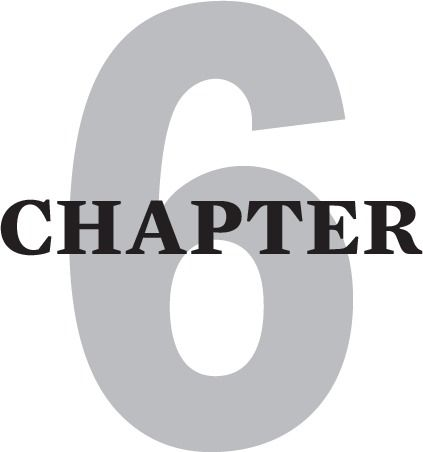
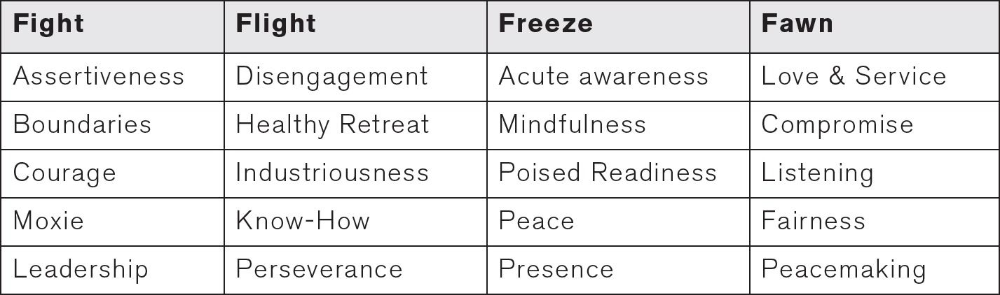
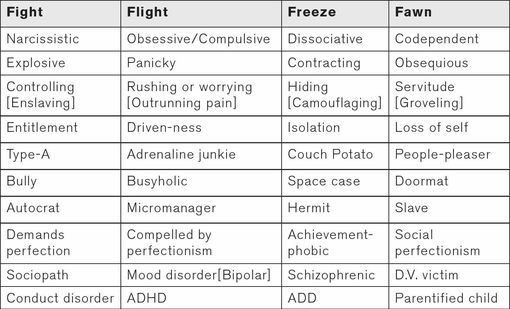
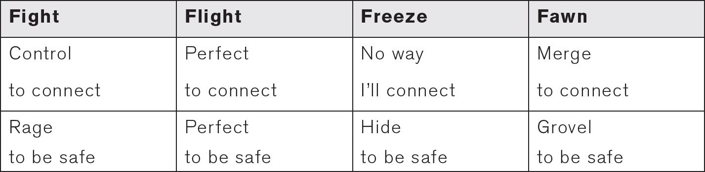

WHAT IS MY TRAUMA TYPE?
This chapter describes a trauma typology for recognizing and recovering from the different types of Cptsd. We human beings respond with some variability to childhood trauma. This model elaborates four basic survival strategies and defensive styles that develop out of our instinctive Fight, Flight, Freeze and Fawn responses.
Variances in your childhood abuse/neglect pattern, birth order and genetics result in you gravitating toward a specific 4F survival strategy. You do this as a child to prevent, escape or ameliorate further traumatization. Fight types develop a narcissistic-like defense. Flight types develop an obsessive/compulsive-like defense. Freeze types develop a dissociative-like defense. Fawn types develop a codependent-like defense.
Healthy Employment Of The 4 F’s
People who experience “good enough parenting” in childhood arrive in adulthood with a healthy and flexible response repertoire to danger. In the face of real danger, they have appropriate access to all of their 4F choices.
Easy access to the fight response insures good boundaries, healthy assertiveness and aggressive self-protectiveness if necessary.
Untraumatized people also easily and appropriately access their flight instinct and disengage and retreat when confrontation would exacerbate their danger.
Untraumatized people also freeze appropriately and give up and quit struggling when further activity or resistance is futile or counterproductive. Additionally, the freeze response is sometimes our first response to danger, as when we become still, quiet and camouflaged to buy time, to assess the danger and decide whether fight, flight, continued freeze or fawn is our best option.
And finally, untraumatized people also fawn in a non-groveling manner and are able to listen, help, and compromise as readily as they assert and express themselves and their needs, rights and points of view. A deeper elaboration of the origins of these four defenses is found below and in the next chapter.
POSITIVE CHARACTERISTICS OF THE FOUR F’S

Those who are repetitively traumatized in childhood often learn to survive by over-using one or two of the 4F Reponses. Fixation in any one 4F response not only limits our ability to access all the others, but also severely impairs our ability to relax into an undefended state. Additionally, it strands us in a narrow, impoverished experience of life.
Over time a habitual 4F defense also “serves” to distract us from the nagging voice of the critic and the painful feelings that underlie it. Preoccupation with 4F behaviors dulls our awareness of our unresolved past trauma and the pain of our current alienation.
This chart compares the harmful behaviors of each defensive structure. Real or imagined danger typically triggers us into these roles and behaviors when we are in an emotional flashback.
DETRIMENTAL CHARACTERISTICS OF THE 4F DEFENSES

CPTSD AS AN ATTACHMENT DISORDER
Excessive reliance on a fight, flight, freeze or fawn response is the traumatized child’s unconscious attempt to cope with constant danger. It is also a strategy to strengthen the illusion that her parents really care about her.
In adult life, all 4F types are commonly ambivalent about real intimacy. This is because closeness often triggers us into painful emotional flashbacks. It reminds us of how we had to survive without comforting connection in childhood. Our 4F defenses therefore offer protection against further re-abandonment by precluding the type of vulnerable relating that leads to deeper bonding.
A survivor also avoids vulnerable relating because his past makes him believe that he will be attacked or abandoned as he was in childhood. This is why showing vulnerability often triggers painful emotional flashbacks.
Many fight types avoid real intimacy by alienating others with their angry and controlling demands for unconditional love. This unrealistic demand to have their unmet childhood needs met destroys the possibility of intimacy. Moreover, some fight types delude themselves into believing that they are perfect. They see the other as the one who needs to be perfected. This defensive belief then entitles them to totally blame their partners for relationship problems.
Many flight types stay perpetually busy and industrious to avoid being triggered by deeper relating. Others also work obsessively to perfect themselves hoping to someday become worthy enough of love. Such flight types have great difficulty showing anything but their perfect persona.
Many freeze types hide away in their rooms and reveries fully convinced that the world of relating holds nothing for them. Freeze type who have not been totally turned off relationships by horrible childhood neglect or abuse, gravitate to online relationships. Online relating can be pursued safely at home with as little contact as desired.
Many fawn types avoid emotional investment and potential disappointment by barely showing themselves. They hide behind their helpful personas and over-listen, over-elicit and/or overdo for the other. By over-focusing on their partners, they then do not have to risk real self-exposure and the possibility of deeper level rejection.
This chart compares and contrasts the differences between the four types.
4F DISTORTIONS OF ATTACHMENT AND SAFETY INSTINCTS

Now let us examine each of the 4F defenses more closely with a view toward decreasing our overreliance on them.
THE FIGHT TYPE AND THE NARCISSISTIC DEFENSE
Fight types are unconsciously driven by the belief that power and control can create safety, assuage abandonment and secure love. Children who are spoiled and given insufficient limits [a uniquely painful type of abandonment] can become fight types. Children who are allowed to imitate the bullying of a narcissistic parent may also develop a habitual fight response. Numerous fight types start out as older siblings who over-power their younger siblings just as their parent over-powers them.
Fight types learn to respond to their feelings of abandonment with anger. Many use contempt, a poisonous blend of narcissistic rage and disgust, to intimidate and shame others into mirroring them. Narcissists treat others as if they are as extensions of themselves.
The entitled fight type commonly uses others as an audience for his incessant monologing. He may treat a “captured” freeze or fawn type as a slave in a dominance-submission relationship. The price of admission to a relationship with an extreme narcissist is self-annihilation. One of my clients quipped: “Narcissists don’t have relationships; they take prisoners.”
The Charming Bully
Especially devolved fight types can become sociopathic. Sociopathy can range along a continuum that stretches from corrupt politician to vicious criminal. A particularly nasty sociopath, who I call the charming bully, probably falls somewhere around the middle of this continuum. The charming bully behaves in a friendly manner some of the time. He can even occasionally listen and be helpful in small amounts, but he still uses his contempt to overpower and control others.
This type typically relies on scapegoats for the dumping of his vitriol. These unfortunate scapegoats are typically weaker than him. They may be members of a disenfranchised group: the “ethnic” employees, the gays, women, his “problem” child or wife, etc. He generally spares his favorites from this behavior, unless they get out of line.
If the charming bully is charismatic enough, those close to him will often fail to register the unconscionable meanness of his scapegoating. The bully’s favorites often slip into denial, relieved that they are not the target. Especially charismatic bullies may even be admired and seen as great. Being the scapegoated child or spouse of such a bully is especially problematic because it is so difficult to get anyone to validate that you were or are being abused by them.
I remember how perplexed I used to be at photos of Hitler ostensibly acting kindly to his children. And I think as I write this of how many billionaires are venerated, and how most of them stand up very poorly to closer scrutiny. So many billionaires use sociopathic tactics to accrue their fortunes. Examples of this are hostile takeovers, exploitive labor policies, health destroying work conditions, devastating environmental practices and various other forms of cheating, lying and back-stabbing.
The “great” icon, Henry Ford, would regularly place new young workers at the front of his “innovative” assembly lines. The tired, used-up workers further down the line who could not then keep up were unceremoniously ushered out the back door. Labor unions eventually curtailed that practice in this country, but many jobs have since been exported to unregulated third world countries where workers labor in the same atrocious soul- and body-destroying conditions.
And then, on a much less grand level, I remember a best friend I had in my twenties. I thought he was a great guy for almost two years until one day, shopping in the supermarket with him, I witnessed his demeaning lambasting of an innocent checker just out of sheer spite.
Other Types Of Narcissists
Rageaholic narcissists are infamous for using other people as dumping grounds for their anger. They are addicted to the emotional release of catharting in this way. The relief often does not last long before they are looking for another fix of venting their spleen.
This type of narcissism is pure bullying, and bullying alone can cause ptsd. If it goes on long enough as it does with bullying parents in a dysfunctional family, it can cause Cptsd. If this rings a bell with you, please check out www.nobully.com .
Furthermore, and closer to a key theme of this book, I report the evidence of more than a few clients who were horribly abused by their pillar-of-the-community, narcissistic parents. Among them is my suave silent-type father, who regularly raged at and backhanded me and my sisters. He was much admired in our neighborhood.
A final example of narcissism is the charming narcissist who is not necessarily a bully. I call this type the narcissist in codependent clothing. My friend’s father is this type of charming narcissist. When you meet him, he lures you in with questions and elicitation that make you feel like he is interested in you. But, within a few minutes [once you have taken the bait], he suddenly shifts into monologing like a filibusterer. This particular type often masters the run-on sentence and there is nary a pause to interject or even offer an excuse for escaping. You have become a captive audience and your release will not be procured easily.
Recovering From A Polarized Fight Response
I agree with the widely held notion that extreme narcissists and sociopaths are untreatable. Typically they are convinced that they themselves are perfect and that everyone else the problem.
Fight types who are not true narcissists, however, benefit from understanding the costly price they pay for controlling others with intimidation, criticism and sarcasm. Some who I worked with eventually saw how their aggressive behavior scared away their potential intimates. One survivor also realized that although her partner stayed, he was so afraid and resentful of her demandingness and irritability, that he could not manifest the warmth or real liking that she so desperately desired.
I have also helped a number of fight types understand the downward spiral of power and alienation that comes from being over-controlling. It looks like this: excessive use of power triggers a fearful emotional withdrawal in the other, which makes the fight type feel even more abandoned. In turn, he becomes more outraged and contemptuous, which then further distances his “intimate”. This once again increases the fight type’s rage and disgust, which then creates increasing distance and the withholding of warmth, ad infinitum.
Fight types benefit from learning to redirect their rage toward the awful childhood circumstances that caused them to adopt such an intimacy-destroying defense. This can help them to deconstruct their habits of instantly morphing abandonment feelings into rage and disgust.
As the recovering fight type becomes more conscious of his abandonment feelings, he can learn to release his fear and shame with tears. I have helped several fight types by guiding them to cry to release their hurt, rather than always polarizing to angering it out. When we are hurt, part of us is sad and part of us is mad, and no amount of angering can ever metabolize our sadness.
Fight types need to see how their condescending, moral high-ground position alienates others and perpetuates their present time abandonment. They must renounce the illusion of their own perfection and the habit of projecting perfectionistic inner critic processes onto others. This is the work of shrinking the Outer Critic as we will see in chapter 10.
Fight types also benefit from learning to take self-initiated timeouts whenever they notice that they are triggered and feeling overcritical. Timeouts can then be used to redirect the lion’s share of their hurt feelings into grieving and working through their original abandonment, rather than displacing it destructively onto current intimates.
Furthermore, like all 4F fixations, fight types need to become more flexible and adaptable in using the other 4F responses. If you are a recovering fight type, it will especially benefit you to learn the empathy response of the fawn position. Begin by trying to imagine how it feels to be the person you are interacting with. Do it as much as you can. Moreover, you can expand on this by developing mindfulness about the needs, rights and feelings of those with whom you would like to have real intimacy.
In early recovery you can “fake it until you make it.” For without practicing consideration for the other, and without reciprocity and dialogicality [as opposed to monologing], the intimacy you crave will allude you.
THE FLIGHT TYPE AND THE OBSESSIVE-COMPULSIVE DEFENSE
Extreme flight types are like machines with the switch stuck in the “on” position. They are obsessively and compulsively driven by the unconscious belief that perfection will make them safe and love-able. They rush to achieve. They rush as much in thought [obsession] as they do in action [compulsion].
As children, flight types variably respond to their family trauma on a hyperactive continuum. The flight defense continuum stretches between the extremes of the driven “A” student and the ADHD [Attention Deficit Hyperactive Disorder] dropout running amok. Flight types relentlessly flee the inner pain of their abandonment with the symbolic flight of constant busyness.
Left-Brain Dissociation
When the obsessive/compulsive flight type is not doing, she is worrying and planning about doing. She becomes what John Bradshaw calls a Human Doing [as opposed to a Human Being.] Obsessiveness is left-brain dissociation, as opposed to the classic right-brain dissociation of the freeze type described below.
Left-brain dissociation is using constant thinking to distract yourself from underlying abandonment pain. When thinking is worrying, it is as if underlying fear wafts up and taints the thinking process. Moreover, if compulsivity is hurrying to stay one step ahead of your repressed pain, obsessing is worrying to stay one level above underlying pain.
As a flight type myself, I sometimes find myself obsessively worrying through my outline just before a lecture. I do it, in part, to stay buoyant above my performance anxiety [a subset of my abandonment fear]. In my early days of teaching I would also employ a compulsive defense and pace as I anxiously searched my brain for a missing word. Sometimes I would even scramble frantically through the dictionary or thesaurus to find it. Unconsciously it was like I was searching for a safe place beyond the gravity of my anxiety.
Flight types are also prone to becoming addicted to their own adrenalin. Some recklessly and regularly pursue risky and dangerous activities to jumpstart an adrenalin-high. Flight types are also susceptible to the process addictions of workaholism and busy-holism. To keep these processes humming, they can deteriorate into stimulating substance addictions.
Severely traumatized flight types may devolve into obsessive-compulsive disorder [OCD].
Recovering From A Polarized Flight Response
The flight types that I have worked with are so busy trying to stay one step ahead of their pain that introspecting out loud in the therapy hour is the only time they find for self-examination. Learning about the 4F model often helps them to renounce the perfectionistic demands of the inner critic.
I gently and repetitively focus on confronting their denial and minimization about the costs of perfectionism. This is especially important with workaholics who often admit their addiction but secretly hold onto it as a badge of pride and superiority.
Flight types can get “stuck in their head” by being over-analytical. Once a critical mass of understanding Cptsd is achieved, it is crucial for them to start moving into their feelings. Sooner or later, they must deepen their work by grieving about their childhood losses.
Self-compassionate crying is an unparalleled tool for shrinking the obsessive perseverations of the critic, and for ameliorating the habit of compulsive rushing. As her recovery progresses, the flight type can acquire a “gearbox” that allows her to engage life at a variety of speeds, including neutral. Neutral is especially important for flight types to cultivate.
If you are a flight type, there are a plethora of self-help books, CD’s and classes that can help you learn to relax and decrease the habit of habitual doing. This is so essential because you can get so lost in busyness, that you have difficulty seeing the forest from the trees. This makes you prone to prioritizing the wrong tasks and getting lost in inessential activities. When I am triggered, I often feel pulled to busy myself with the simplest and easiest tasks, sometimes losing sight of my key responsibilities.
In flashback, flight types can deteriorate into chicken-with-its-head-cut-off mode, as fear and anxiety propel them into scattered activity. Spinning their wheels, they can rush about aimlessly, as if motion itself is the only thing important.
At such times the flight type can rescue himself from panicky flight by inverting an old cliché into: “Don’t just do something, stand there.” And, by stand there I mean stop and take some time to become centered - and to re-prioritize. To accomplish this I recommend three minute, mini-chair meditations. If you are a flight type, you can enhance your recovery greatly by giving yourself a few of these each day. You can start a chair meditation by closing your eyes. Gently ask your body to relax. Feel each of your major muscle groups and softly encourage them to relax. Breathe deeply and slowly.
When you have relaxed your muscles and deepened and slowed your breathing, ask yourself: “What is my most important priority right now? What is the most beneficial thing I can do next?”
As you get more proficient at this and can manage sitting for a longer time, try the question: “What hurt am I running from right now? Can I open my heart to the idea and image of soothing myself in my pain?”
Finally, there are numerous flight types who exhibit symptoms that may be misdiagnosed as Cyclothymia, a minor bipolar disorder. This issue is addressed at length in chapter 12.
THE FREEZE TYPE AND THE DISSOCIATIVE DEFENSE
The freeze response, also known as the camouflage response, often triggers a survivor into hiding, isolating and avoiding human contact. The freeze type can be so frozen in the retreat mode that it seems as if their starter button is stuck in the “off” position.
Of all the 4F’s, freeze types seem to have the deepest unconscious belief that people and danger are synonymous. While all 4F types commonly suffer from social anxiety as well, freeze types typically take a great deal more refuge in solitude. Some freeze types completely give up on relating to others and become extremely isolated. Outside of fantasy, many also give up entirely on the possibility of love.
Right-Brain Dissociation
It is often the scapegoat or the most profoundly abandoned child, “the lost child”, who is forced to habituate to the freeze response. Not allowed to successfully employ fight, flight or fawn responses, the freeze type’s defenses develop around classical or right-brain dissociation. Dissociation allows the freeze type to disconnect from experiencing his abandonment pain, and protects him from risky social interactions - any of which might trigger feelings of being retraumatized.
If you are a freeze type, you may seek refuge and comfort by dissociating in prolonged bouts of sleep, daydreaming, wishing and right-brain-dominant activities like TV, online browsing and video games.
Freeze types sometimes have or appear to have Attention Deficit Disorder [ADD]. They often master the art of changing the internal channel whenever inner experience becomes uncomfortable. When they are especially traumatized or triggered, they may exhibit a schizoid-like detachment from ordinary reality. And in worst case scenarios, they can decompensate into a schizophrenic experience like the main character in the book, I Never Promised You a Rose Garden.
Recovering From A Polarized Freeze Response
Recovery for freeze types involves three key challenges.
First, their positive relational experiences are few if any. They are therefore extremely reluctant to enter into the type of intimate relationship that can be transformative. They are even less likely to seek the aid of therapy. Moreover, those who manage to overcome this reluctance often spook easily and quickly terminate.
Second, freeze types have two commonalities with fight types. They are less motivated to try to understand the effects of their childhood traumatization. Many are unaware that they have a troublesome inner critic or that they are in emotional pain. Furthermore, they tend to project the perfectionistic demands of the critic onto others rather than onto themselves. This survival mechanism helped them as children to use the imperfections of others as justification for isolation. In the past, isolation was smart, safety-seeking behavior.
Third, even more than workaholic flight types, freeze types are in denial about the life narrowing consequences of their singular adaptation. Some freeze types that I have worked with seem to have significant periods of contentment with their isolation. I think they may be able to self-medicate by releasing the internal opioids that the animal brain is programmed to release when danger is so great that death seems imminent.
Internal opioid release is more accessible to freeze types because the freeze response has its own continuum that culminates with the collapse response. The collapse response is an extreme abandonment of consciousness. It appears to be an out-of-body experience that is the ultimate dissociation. It can sometimes be seen in prey animals that are about to be killed. I have seen nature films of small animals in the jaws of a predator that show it letting go so thoroughly that its death appears to be painless.
However, the opioid production that some freeze types have access to, only takes the survivor so far before its analgesic properties no longer function. Numbed out contentment then morphs into serious depression. This in turn can lead to addictive self-medicating with substances like alcohol, marijuana and narcotics. Alternatively, the freeze type can gravitate toward ever escalating regimens of anti-depressants and anxiolytics. I also suspect that some schizophrenics are extremely traumatized freeze types who dissociate so thoroughly that they cannot find their way back to reality.
Several of my freeze type respondents highly recommend a self-help book by Suzette Boon, entitled Coping with Trauma-related Dissociation. This book is filled with very helpful work sheets that are powerful tools for recovering.
More than any other type, the freeze type usually requires a therapeutic relationship, because their isolation prevents them from discovering relational healing through a friendship. That said, I know of some instances where good enough relational healing has come through pets and the safer distant type of human healing that can be found in books and online internet groups.
Phyllis, a self-proclaimed couch potato, began therapy with me with a great deal of ambivalence. Her third brand of anti-depressants no longer worked and her daily pot use was making her increasingly paranoid. Fantasies of dying were becoming more frequent and morbid. She told me: “I know therapy won’t help, but I’m afraid my husband is going to leave me. He says I’m starting to scare him.”
Phyllis managed being married because her husband paid the bills and left her alone with her TV shows, science fiction books and online browsing. Additionally he was a workaholic, rarely around and gone in the computer when he was home.
In our therapy, trust building was a long gradual back and forth process. This is not un common with many survivors, regardless of their 4F type.
Phyllis’s dark sense of humor was a saving grace, and helped her weather my psychoeducation. She frequently met my attempts to link her current suffering and her awful childhood with sarcastic rebuttal. Fortunately, growing up in New York gave me some resilience to sarcasm. I was willing to weather her sardonic sense of humor because there was no mean spiritedness in it.
Eventually I was able to help her direct the angry part of her sarcasm at her bullying family. With that, my psychoeducation finally began to seep in with a ring of truth. She gradually began to angrily vent about her father’s sexual abuse, her mother’s silent collusion, and all of the family using her for target practice. This in time morphed into crying which rewarded her with her first ever experience of self-compassion.
It was not until we reached this stage, some years into the therapy, that Phyllis got a glimpse of the vicious inner critic that persecuted her. Prior to this she rebuffed my “critic ravings” as absurd. When we progressed sufficiently with the inner critic, the same process occurred with my hypotheses that she had a great deal of underlying fear and anxiety that was keeping her housebound. She laughed with a great deal of ironic amusement: “Look at me, Pete! Nothing scares me. I am so relaxed that I can hardly hold my body up in this chair. Jeez! You know I’m always nodding out. My husband calls me ‘Mellow Yellow.’”[Phyllis is blonde].
A breakthrough eventually happened here when she passed a man on the sidewalk outside my office that was a doppelganger for her father. She came into the session on the verge of hyperventilating. As I helped her slow and deepen her breathing, she had a therapeutic flashback in the office. She had a horrifying memory of her father sneaking into her bedroom at night. Much grieving then resolved this particular flashback to her sexual abuse.
Phyllis’s denial shrunk significantly in this session. She really “got” that social anxiety was imprisoning her on her couch. Deep level recovery work then ensued from this point in time, and culminated with Phyllis feeling emboldened enough to go back to school. She went on to become a medical assistant. This in turn opened the door to her finding a meaningful place in the outside world. A key part of the meaningfulness was the healthy friendship that she developed with a fellow worker who was also in recovery.
The progression of recovery for a freeze type is often as follows. Gradual trust building allows the recoveree to open to psychoeducation about the role of dreadful parenting in his suffering. This then paves the way for the work of shrinking his critic, which in turn promotes the work of grieving the losses of childhood. The anger work of grieving is especially therapeutic for freeze types as is an aerobic exercise regime. Both help resuscitate the survivor’s dormant will and drive.
THE FAWN TYPE AND THE CODEPENDENT DEFENSE
Fawn types seek safety by merging with the wishes, needs and demands of others. They act as if they believe that the price of admission to any relationship is the forfeiture of all their needs, rights, preferences and boundaries.
The disenfranchisement of the fawn type begins in childhood. She learns early that a modicum of safety and attachment can be gained by becoming the helpful and compliant servant of her exploitive parents.
A fawn type/codependent is usually the child of at least one narcissistic parent. The narcissist reverses the parent-child relationship. The child is parentified and takes care of the needs of the parent, who acts like a needy and sometimes tantruming child.
When this occurs, the child may be turned into the parent’s confidant, substitute spouse, coach, or housekeeper. Or, she may be pressed into service to mother the younger siblings. In worst case scenarios, she may be exploited sexually.
Some codependent children adapt by becoming entertaining. Accordingly, the child learns to be the court jester and is unofficially put in charge of keeping his parent happy.
Pressing a child into codependent service usually involves scaring and shaming him out of developing a sense of self. Of all the 4F types, fawn types are the most developmentally arrested in their healthy sense of self.
Recovering From A Polarized Fawn Response
Fawn types typically respond to psychoeducation about the 4F’s with great relief. This eventually helps them to recognize the repetition compulsion that draws them to narcissistic types who exploit them.
The codependent needs to understand how she gives herself away by over-listening to others. Recovery involves shrinking her characteristic listening defense, as well as practicing and broadening her verbal and emotional self-expression.
I have seen numerous inveterate codependents become motivated to work on their assertiveness when they realize that even the thought of saying “no” triggers them into an emotional flashback. After a great deal of work, one client was shocked by how intensely he dissociated when he contemplated confronting his boss’s awful behavior. This shock then morphed into an epiphany of outrage about how dangerous it had been to protest anything in his family. This in turn aided him greatly in overcoming his resistance to role-playing assertiveness in our future work together.
With considerable practice, this client learned to overcome the critic voices that immediately short-circuited him from ever asserting himself. In the process, he remembered how he was repeatedly forced to stifle his individuality in childhood. Grieving these losses then helped him to work at reclaiming his developmentally arrested self-expression. Recovering from the fawn position will be explored more extensively in the next chapter.
TRAUMA HYBRIDS
There are, of course, few pure types. Moreover each type is on a continuum that runs from mild to extreme. Most trauma survivors are also hybrids of the 4F’s. Most of us have a backup response that we go to when our primary one is not effective enough. When neither of these work, we generally then have a third or fourth “go to” position. Here are some common hybrid types.
The Fight-Fawn Hybrid
The Fight-Fawn type corresponds with the charming bully described earlier. This type combines two opposite polarities of relational style – narcissism and codependence. Narcissistic entitlement, however, is typically at the core of the fight-fawn type. This type, in the extreme, can also be Borderline Personality Disorder [BPD]. She can frequently and dramatically vacillate [split] between a fight and fawn defense. When a fight-fawn type is upset with someone, she can fluctuate over and over between attacking diatribes and fervent declarations of caring in a single interaction.
The fight-fawn is more deeply understood by contrasting him with the fawn-fight, described in the next chapter. This fawn-fight type is also subject to vacillating during an emotional flashback, but typically does so with less vitriol and entitlement.
The fight-fawn also differs from the fawn-fight in that his “care-taking” often feels coercive or manipulative. It is frequently aimed at achieving personal agendas which range from blatant to covert. Moreover, the fight-fawn rarely takes any real responsibility for contributing to an interpersonal problem. He typically ends up in the classic fight position of projecting imperfection onto the other. This essentially narcissistic type is also different than the fawn-fight in that entitlement is typically much more ascendant in the fight-fawn. His fawn behavior is typically devoid of real empathy or compassion.
I have worked with several clients who were unfairly labeled borderline by themselves or others. I could however tell by the quality of their hearts, that they were not. This was evidenced by their essential kindness and goodwill to others, which they always return to when the flashback resolves. They also exhibit this in their ability to feel and show true remorse when they hurt another, as we are all destined to do from time to time. Unlike the true borderline who has a narcissistic core, they can sincerely apologize and make amends when appropriate.
Another variant of the fight/fawn is seen in the person who acts like a fight type in one relationship while fawning in another. An example of this is the archetypal henpecked husband who is a tyrant at work, and who also stays at work to all hours because he so prefers the fight stance. This type also occurs in reverse: monster at home and lovely lady at the office.
The Flight-Freeze Hybrid
The Flight-Freeze type is the least relational and most schizoid hybrid. He prefers the safety of do-it-yourself isolationism. Sometimes this type may also be misdiagnosed as Asperger’s Syndrome.
The flight-freeze type avoids potential relationship-retraumati-zation with an obsessive-compulsive/dissociative “two-step.” Step one is working to complete exhaustion. Step two is collapsing into extreme “veging out”, and waiting until his energy reaccumulates enough to relaunch into step one. The price for this type of no-longer-necessary safety is a severely narrowed existence.
The flight-freeze cul-de-sac is more common among men, especially those traumatized for being vulnerable in childhood. This then drives them to seek safety in isolation or “intimacy-lite” relationships.
Some non-alpha type male survivors combine their flight and freeze defenses to become stereotypical technology nerds. Telecommuting is, of course, their preferred mode. Flight-freeze types are the computer addicts who focus on work for long periods of time and then drift off dissociatively into computer games, substance abuse or sleep-bingeing.
Flight-freeze types are prone to becoming porn addicts. When in flight mode, they obsessively surf the net for phantom partners and engage in compulsive masturbation. When in freeze mode, they drift off into a right-brain sexual fantasy world if pornography is unavailable. Moreover, if they are in intimacy-lite relationship, they typically engage more with their idealized fantasy partners than with their actual partner during real time sexual interactions.
The Fight-Freeze Hybrid
These types rarely seek recovery on their own initiative. A colleague of mine told me about a fight-freeze type who was dragged into therapy by his wife. She complained that she was lucky to get ten words out of him in a week. She was at the end of her rope and if therapy did not fix him, she was filing for divorce.
The husband was a computer engineer who telecommuted and only left his home office for bathroom breaks and meals which were eaten separately from his wife. He bullied his wife into providing these meals according to a written schedule that he e-mailed to her.
My colleague’s initial “Hello” to the husband was met with a scowl and a grunt. Intuitively, she kept the focus off him as much as possible, but each delicate attempt to make connection with him was rebuffed with sarcastic scorn. “You expect me to fall for that phony smile?”; “You’re not gonna shrink me with your psychobabble!”
My colleague, who is the most compassionate, non-intrusive person I know, was not able to crack the prickly fight shell that guarded this poor man’s extreme social withdrawal. No miracle was performed, and my colleague said she was amazed in retrospect that he even lasted twenty minutes before he left in a wake of hostility and resentment.
I have met with fight-freeze types a few times in similar circumstances, i.e., they were dragged into therapy under the threat of divorce. Each was like the character in the famous poem: “The Autocrat at the Breakfast Table.”
The fight-freeze is a yin or passive narcissist. He demands that things go his way, but he is not much interested in having any human interaction. No one gets to talk at the table, not even him – unless of course someone needs to be put in their place.
The fight-freeze type is a John Wayne couch potato, dominating family life with foul moods and monosyllabic grunts and curses. He is typically as untreatable as the extreme fight types mentioned earlier.
SELF-ASSESSMENT
I recommend that you self-assess your own hierarchical use of the 4F responses. Try to determine your dominant type and hybrid, and think about what percentage of your time is spent in each of the 4F responses.
You can also assess where you lie on the relevant continuums that stretch between the two extremes in each line of the chart below.
Continuums of Positive and Negative 4F Responses
Fight: Assertiveness Bullying
Flight: Efficiency Driven-ness
Freeze: Peacefulness Catatonia
Fawn: Helpfulness Servitude
Recovery And Self-Assessment
As stated earlier, a key goal of recovery is to have easy and appropriate access to all of the 4F’s. There are also two more continuums that can be used to assess this. The degree to which we are balanced along each of them reflects the degree of our healing.
The Fight Fawn Continuum of Healthy Relating to Others
Healthy relating occurs when two people move easily and reciprocally between assertiveness and receptivity. Common and important examples of this are an easy back and forth [1] between talking and listening, [2] between helping and being helped, and [3] between leading and following.
Normal healthy narcissism and codependence happen at the midpoint of the continuum. To the degree that I polarize to the narcissistic/fight end of the continuum, I monologue and dominate the conversation. To the degree that I polarize to the codependent/fawn end, I get stuck in a listening defense, hiding from the vulnerability of showing what I think and feel.
Conversations, of course, will not always be exactly in the middle or it would be a Ping-Pong-like exchange of monosyllables. The real balance occurs more over time. For instance, in an hour’s conversation, we each generally talk about half the time.
The Flight Freeze Continuum of Healthy Relating to Self
A healthy relationship with yourself is seen in your ability to move in a balanced way[1] between doing and being, [2] between persistence and letting go, [3] between sympathetic and parasympathetic nervous system activation, and [4] between intense focus and relaxed, daydreamy reverie.